Examples# A gallery of examples and that showcase how FiberFusing can be used. Some examples demonstrate the use of the API in general and some demonstrate specific applications in tutorial form. FiberFusing.example.clad# 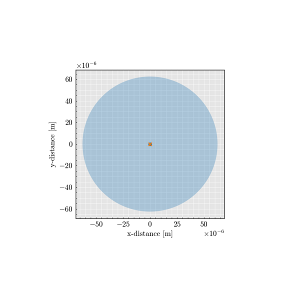 1x1 Ring - Clad 1x1 Ring - Clad 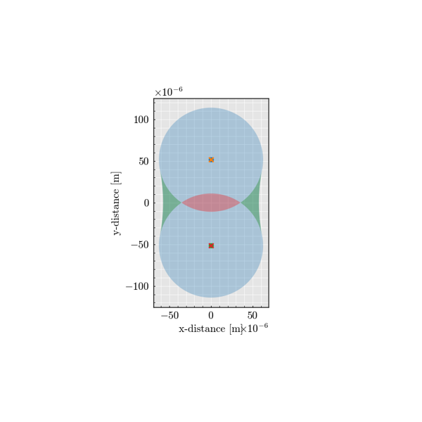 2x2 Ring - Clad 2x2 Ring - Clad 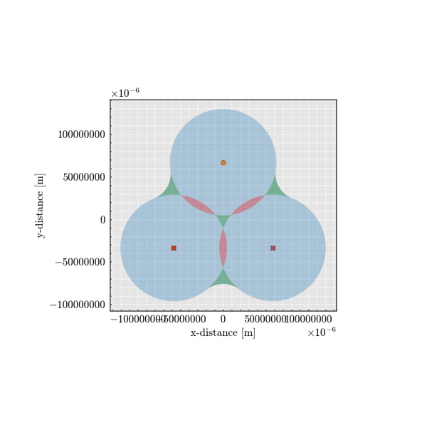 3x3 Ring - Clad 3x3 Ring - Clad 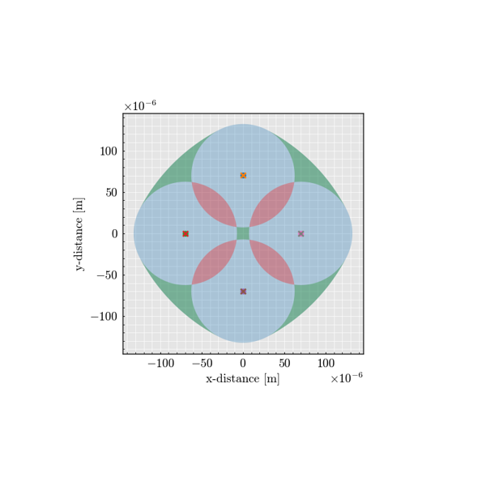 4x4 Ring - Clad 4x4 Ring - Clad 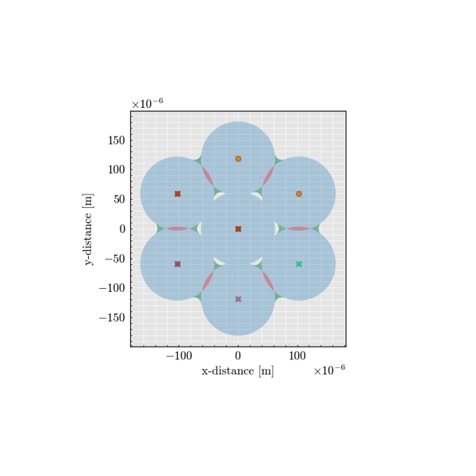 7x7 Ring - Clad 7x7 Ring - Clad 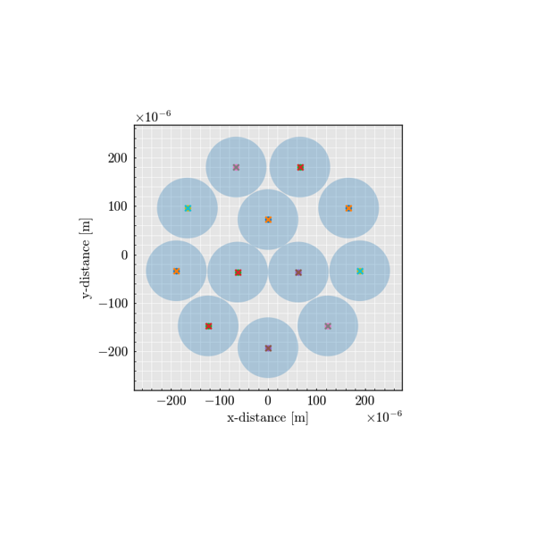 12x12 Ring - Clad 12x12 Ring - Clad 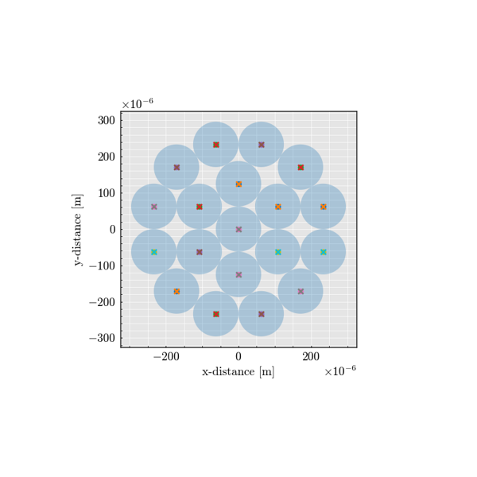 19x19 Ring - Clad 19x19 Ring - Clad 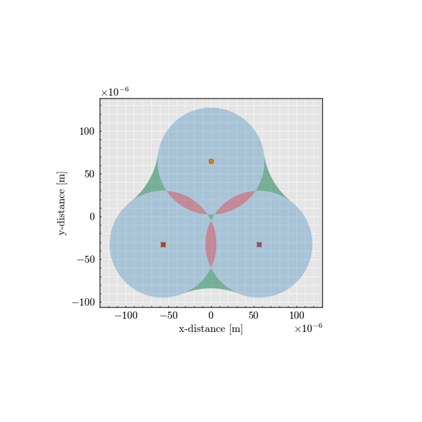 3x3 Line - Clad 3x3 Line - Clad 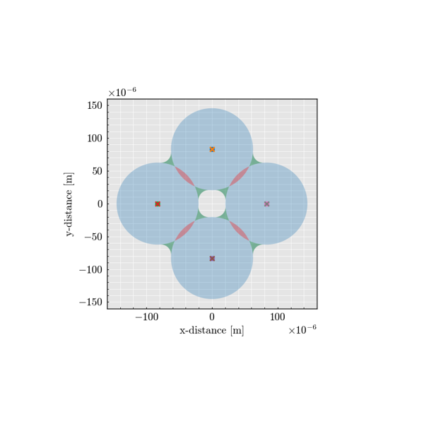 3x3 Line - Clad 3x3 Line - Clad 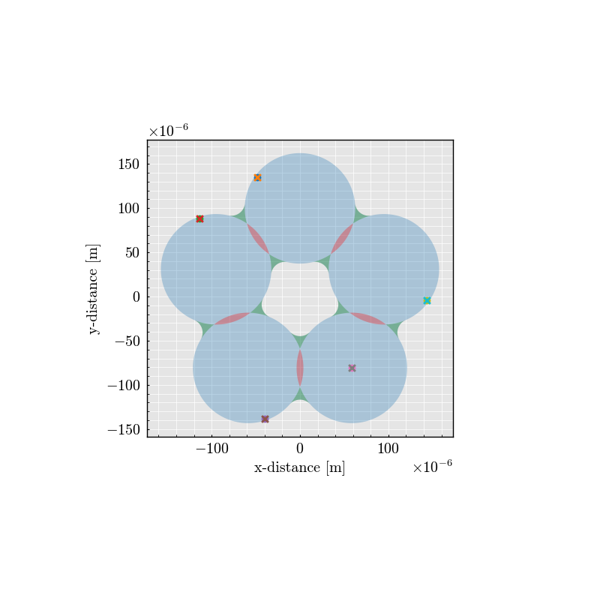 3x3 Line - Clad 3x3 Line - Clad FiberFusing.example.geometry# 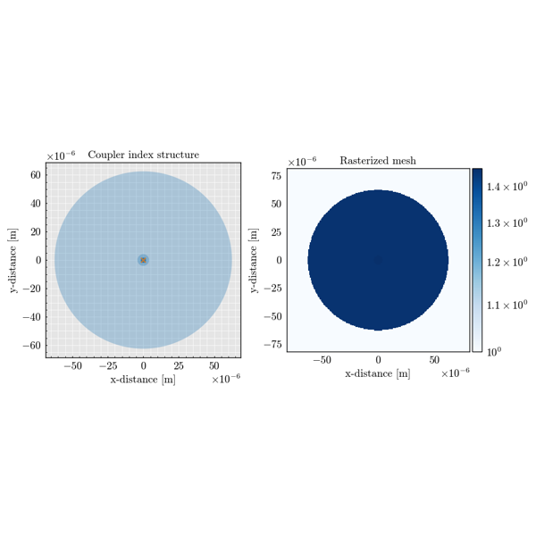 1x1 Geometry 1x1 Geometry 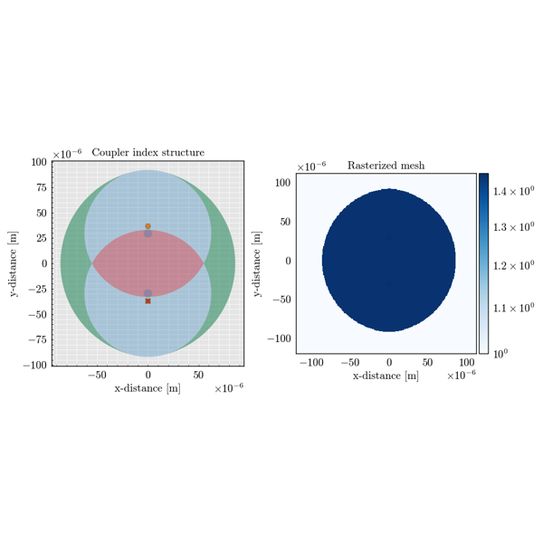 2x2 Ring - Geometry 2x2 Ring - Geometry 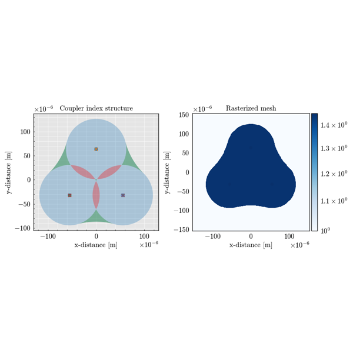 3x3 Ring - Geometry 3x3 Ring - Geometry 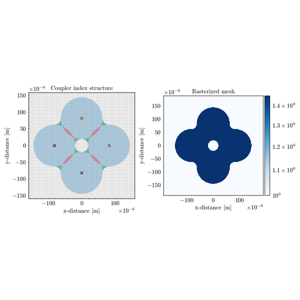 4x4 Ring - Geometry 4x4 Ring - Geometry 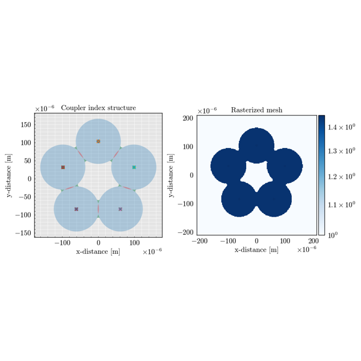 5x5 Ring - Geometry 5x5 Ring - Geometry 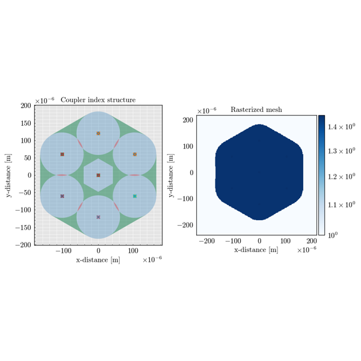 7x7 Ring - Geometry 7x7 Ring - Geometry 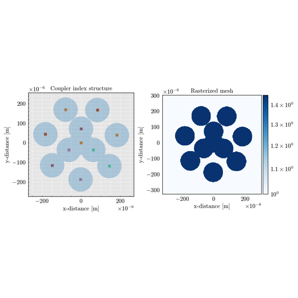 10x10 Ring - Geometry 10x10 Ring - Geometry 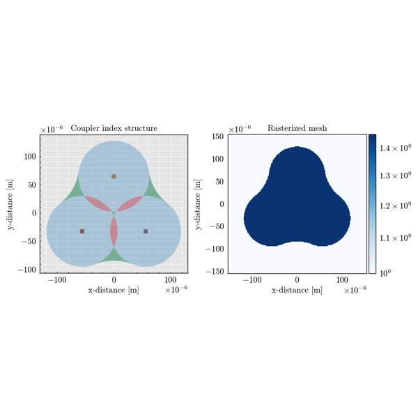 3x3 Line - Geometry 3x3 Line - Geometry 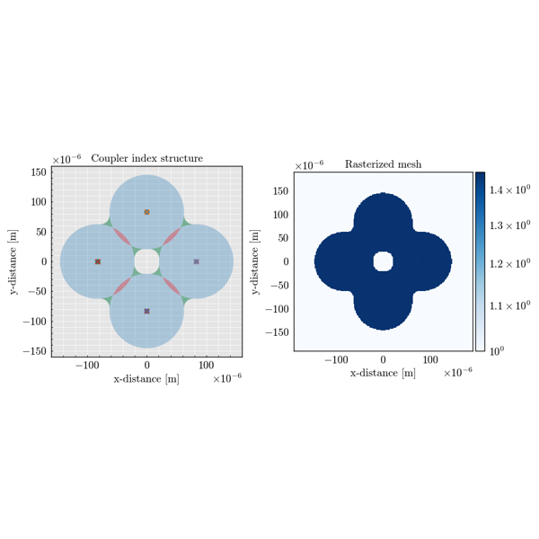 4x4 Line - Geometry 4x4 Line - Geometry 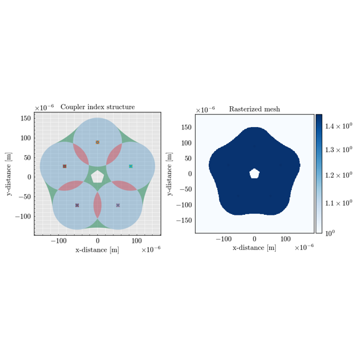 5x5 Line - Geometry 5x5 Line - Geometry Gallery generated by Sphinx-Gallery